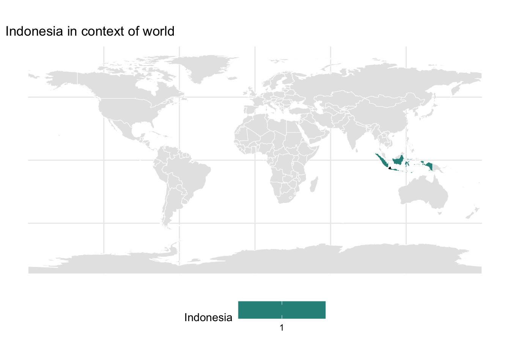
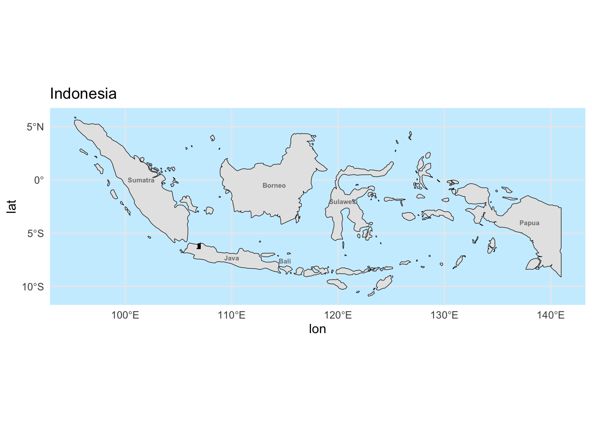
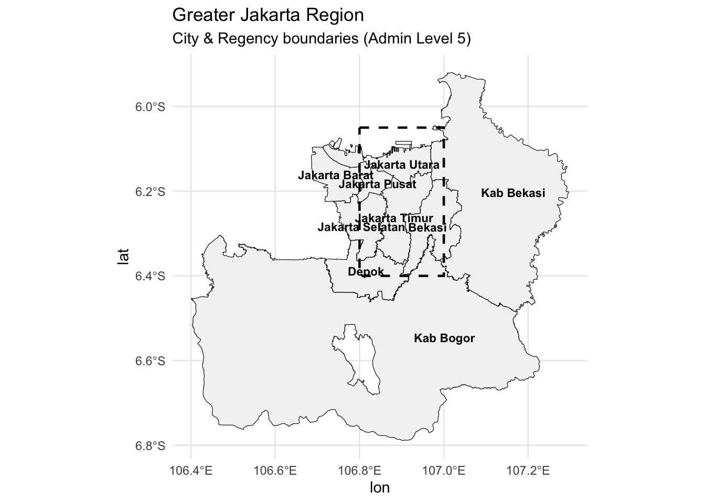
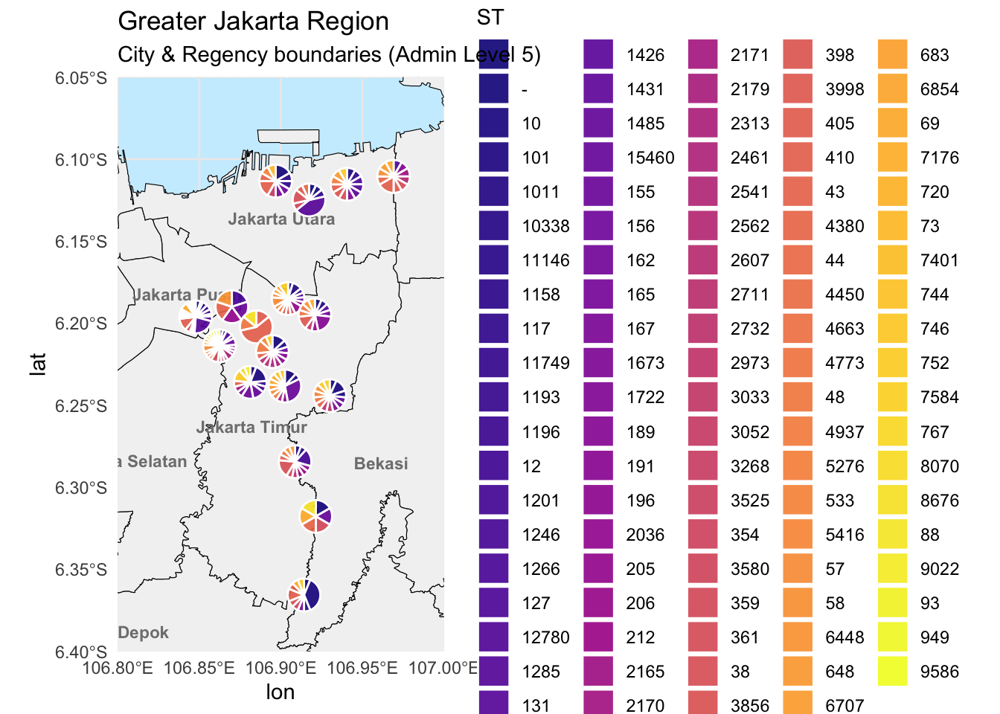
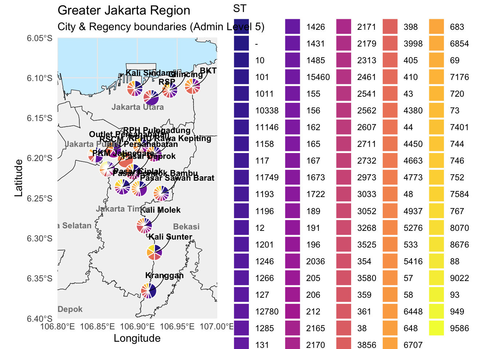
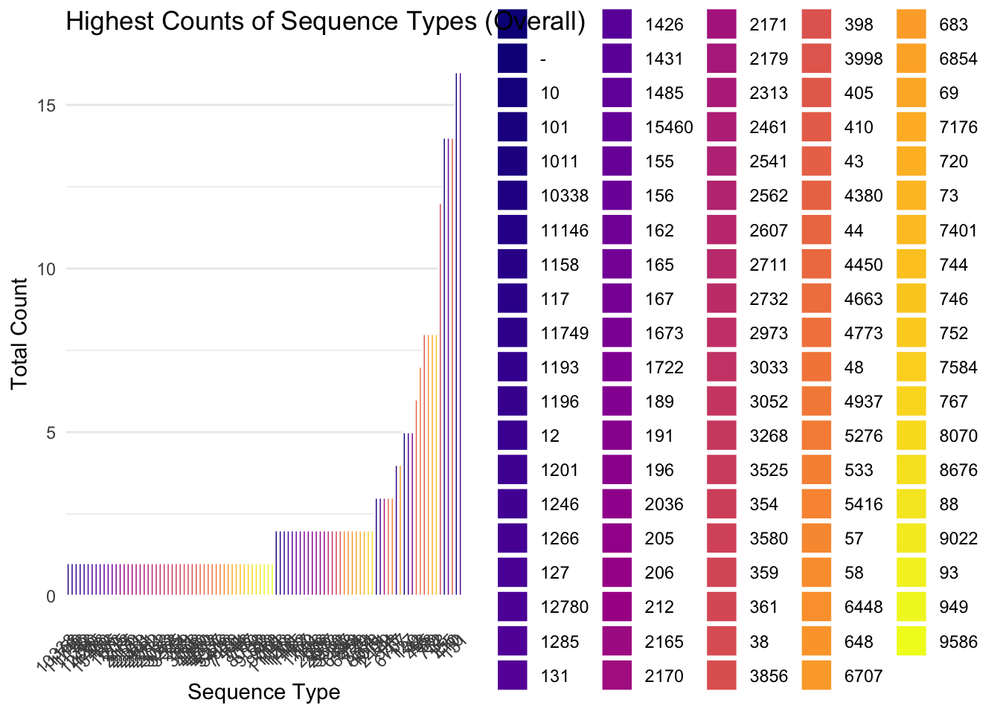
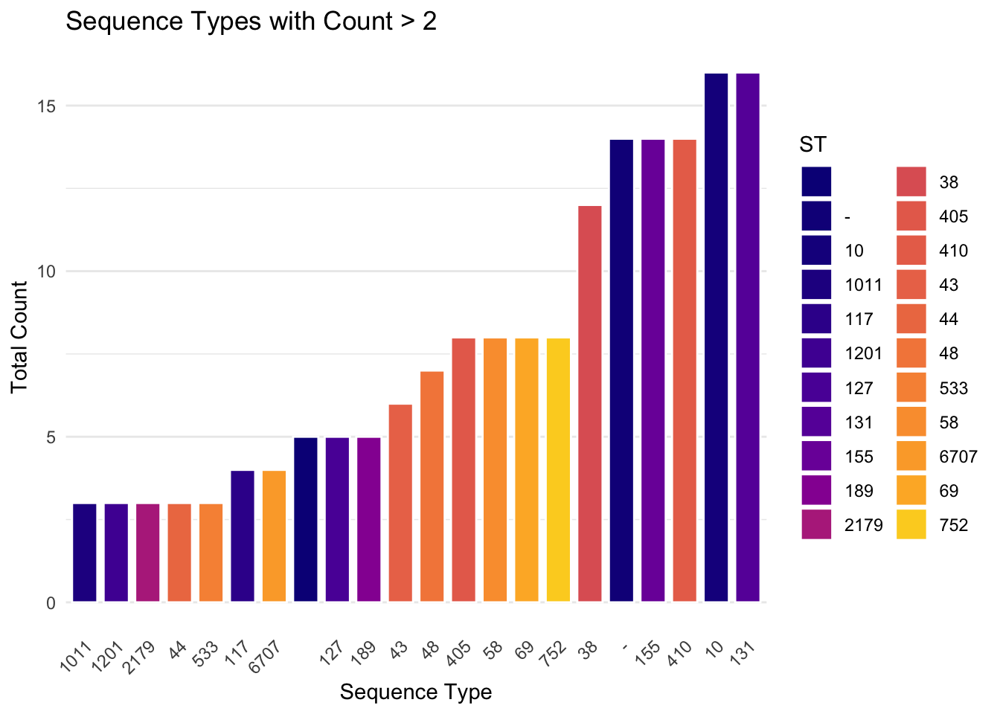
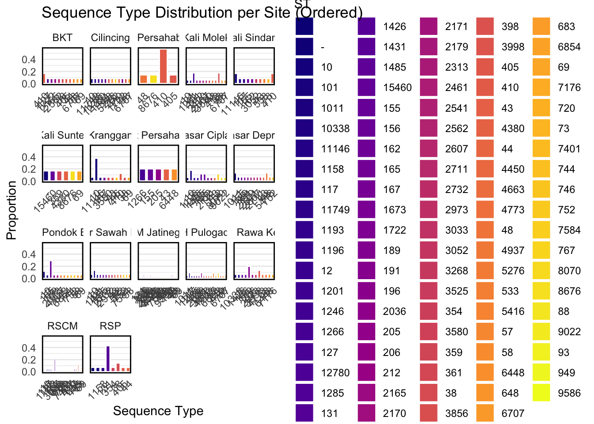

library(sf)
library(ggplot2)
library(osmdata)
library(readxl)
library(dplyr)
library(rnaturalearth)
library(rnaturalearthdata)
library(viridis)
library(tidyr) # For pivoting
library(ggforce) # For pie charts
library(ggrepel)
library(stringr)
library(forcats)Geospatial mapping of Sequence Types isolated from Jakarta, Indonesia
1. Setting up R
2. Loading data
# 1. Read data
metadata = read.csv("../data/metadata_all_edit2.csv")
locations = read_excel("../data/GPS Data of Environment sampling site_TC.xlsx")
mlst = read_excel("../data/tricycle_mlst_data.xlsx")3. Wrangle data
# create a new column with mutations
# Remove number before locations
locations = locations %>%
mutate(site = sub("^[0-9]+\\.", "", Location))
locations[locations$Location == "Pasar Sawah Barat", "Longitude"] <- 106.93
locations[locations$Location == "Outlet Persahabatan", "Longitude"] <- 106.87
locations[locations$Location == "Outlet Persahabatan", "Latitude"] <- -6.19
# create a new column with mutations
metadata = metadata %>%
dplyr::mutate(site = sub("^[0-9]+\\.", "", site))
# Merge metadata and coordinates
metadata_mlst <- metadata %>%
dplyr::left_join(locations, by = c("site" = "site"))
# Choose
metadata_mlst_2 <- metadata_mlst %>%
dplyr::filter(sector == "Human" | sector == "Environment" | sector == "Animal")
write.csv(metadata_mlst_2, "../data/metadata_combined_with_mlst_human_animal_env.csv")
# select only useful columns and remove NAs
metadata_mlst_final = metadata_mlst_2 %>% select(sample_name, sector, sector_colour, site,
SiteCharacteristic, Latitude,
Longitude, ST) %>% na.omit()
# Check the total number of STs in our data
unique(metadata_mlst_final$ST) [1] "38" "206" "69" "93" "196" "4450" "9586" "-" "131"
[10] "155" "3525" "127" "44" "7584" "3268" "165" "405" "73"
[19] "2973" "57" "189" "752" "2711" "48" "10" "6854" "167"
[28] "1485" "2607" "361" "2732" "162" "1196" "2036" "" "58"
[37] "5416" "1011" "533" "9022" "43" "3998" "410" "4937" "8070"
[46] "1246" "648" "2179" "117" "4773" "6448" "720" "3033" "354"
[55] "1158" "15460" "359" "4380" "3052" "398" "2165" "6707" "212"
[64] "1431" "1722" "191" "1201" "2313" "3856" "2541" "11146" "7176"
[73] "8676" "205" "1266" "2170" "3580" "746" "1673" "12780" "5276"
[82] "1426" "4663" "2171" "101" "2562" "10338" "1285" "744" "11749"
[91] "156" "949" "2461" "88" "1193" "7401" "767" "12" "683" length(unique(metadata_mlst_final$ST))[1] 99# Count STs per site
metadata_ST_summ <- metadata_mlst_final %>%
group_by(ST) %>%
summarise(count = n(), .groups = 'drop')
# Count STs per site and make long
metadata_long <- metadata_mlst_final %>%
group_by(site, ST) %>%
summarise(count = n(), .groups = 'drop')
metadata_long <- metadata_long %>%
dplyr::left_join(locations, by = c("site" = "site"))
# Normalize for pie chart radius
metadata_long <- metadata_long %>%
group_by(site) %>%
mutate(total = sum(count),
prop = count / total) %>%
ungroup()
sector_by_site = metadata_mlst_2 %>% select(sector, site, sector_colour) %>%
unique()
metadata_long_sector = metadata_long %>%
dplyr::left_join(sector_by_site, by = c("site" = "site"))Warning in dplyr::left_join(., sector_by_site, by = c(site = "site")): Detected an unexpected many-to-many relationship between `x` and `y`.
ℹ Row 96 of `x` matches multiple rows in `y`.
ℹ Row 15 of `y` matches multiple rows in `x`.
ℹ If a many-to-many relationship is expected, set `relationship =
"many-to-many"` to silence this warning.Check the distribution of STs across sites
### Check the distribution of STs across sites ######
# 2. Group by ST, count distinct sites and collapse their names
st_summary <- metadata_mlst_final %>%
group_by(ST) %>%
summarize(
n_sites = n_distinct(site),
sites = paste(unique(site), collapse = "; ")
)
# 3. Pull out the ST(s) with the maximum number of sites
widest_dist <- st_summary %>%
filter(n_sites == max(n_sites))
print(widest_dist)# A tibble: 1 × 3
ST n_sites sites
<chr> <int> <chr>
1 - 11 PKM Jatinegara; RPHU Rawa Kepiting; Pasar Ciplak; Pasar Deprok;…### Check the distribution of STs across sectors ######
# 2. Group by ST, count distinct sites and collapse their names
st_sector_summary <- metadata_mlst_final %>%
group_by(ST) %>%
summarize(
n_sites = n_distinct(sector),
sector = paste(unique(sector), collapse = "; ")
)
# 3. Pull out the ST(s) with the maximum number of sites
widest_dist <- st_summary %>%
filter(n_sites == max(n_sites))
print(widest_dist)# A tibble: 1 × 3
ST n_sites sites
<chr> <int> <chr>
1 - 11 PKM Jatinegara; RPHU Rawa Kepiting; Pasar Ciplak; Pasar Deprok;…4. Plot map and Sequence Types
4.1 Plot at World Level
# World map data
indonesia = data.frame(Country = c("Indonesia"), Value = 1)
# Load world map
world = ne_countries(scale = "medium", returnclass = "sf")
# Join data
world_indonesia = world %>%
left_join(indonesia, by = c("admin" = "Country"))
# Bounding box coordinates (replace with your actual ones)
x_min = 106.7
x_max = 107.1
y_min = -6.4
y_max = -5.9
# Plot
ggplot(data = world_indonesia) +
geom_sf(aes(fill = Value), color = "white", size = 0.2) +
scale_fill_viridis_c(na.value = "grey90", name = "Indonesia") +
labs(title = "Indonesia in context of world") +
theme_minimal() +
theme(legend.position = "bottom") +
# Draw the bounding box
annotate("rect",
xmin = x_min, xmax = x_max,
ymin = y_min, ymax = y_max,
color = "black", fill = "black", size = 0.8, linetype = "dashed")
4.2 Plot at Country Level
# Filter only Indonesia
indonesia_map = world %>%
filter(admin == "Indonesia")
# Island label data (approximate centroids)
island_labels = data.frame(
name = c("Sumatra", "Java", "Borneo", "Sulawesi", "Bali", "Papua"),
lon = c(101.5, 110, 114, 120.5, 115, 138),
lat = c(0, -7.3, -0.5, -2, -7.6, -4)
)
x_min = 106.8
x_max = 107.0
y_min = -6.4
y_max = -6.05
ggplot(data = indonesia_map) +
geom_sf(fill = "grey90", color = "black", size = 0.3) +
geom_text(data = island_labels, aes(x = lon, y = lat, label = name),
size = 2, fontface = "bold", color = "gray50") +
annotate("rect", xmin = x_min, xmax = x_max,
ymin = y_min, ymax = y_max,
color = "black", fill = "black", size = 0.8, linetype = "dashed") +
labs(title = "Indonesia") +
theme_minimal() +
theme(
panel.background = element_rect(fill = "#cceeff", color = NA))
4.3 Plot detailed map of Jakarta (level 5)
We will chose a map of Jakarta at level 5
gj_bbox = c(xmin = 106.8, ymin = -6.4, xmax = 107.0, ymax = -6.05)
# Query for city/regency boundaries (admin level 5)
greater_jakarta_admin = opq(bbox = gj_bbox) %>%
add_osm_feature(key = "admin_level", value = "5") %>%
osmdata_sf()
greater_jakarta_map = greater_jakarta_admin$osm_multipolygons
gj_filtered = greater_jakarta_map %>%
filter(grepl("Jakarta|Bogor|Bekasi|Depok|Tangerang", name))
labels_df = gj_filtered %>%
st_point_on_surface() %>% # safer than centroid for oddly shaped areas
select(name) %>%
mutate(lon = st_coordinates(.)[,1],
lat = st_coordinates(.)[,2])
ggplot() +
geom_sf(data = gj_filtered, fill = "gray95", color = "black") +
annotate("rect", xmin = x_min, xmax = x_max,
ymin = y_min, ymax = y_max,
color = "black", fill = NA, size = 0.8, linetype = "dashed") +
theme_minimal() +
labs(title = "Greater Jakarta Region",
subtitle = "City & Regency boundaries (Admin Level 5)") +
geom_text(data = labels_df,
aes(x = lon, y = lat, label = name),
size = 3, fontface = "bold", color = "black") 
4.4 Plot detailed map of Jakarta with piecharts representing Sequence Type
Now add the pie charts to this plot, and also reduce the axes so it concentartes on Jakarta city
ggplot() +
geom_sf(data = gj_filtered, fill = "gray95", color = "black") +
geom_text(data = labels_df,
aes(x = lon, y = lat, label = name),
size = 3, fontface = "bold", color = "gray50") +
geom_arc_bar(data = metadata_long %>%
group_by(site) %>%
mutate(end = 2 * pi * cumsum(prop),
start = lag(end, default = 0)),
aes(x0 = Longitude, y0 = Latitude, r0 = 0, r = 0.01,
start = start, end = end, fill = ST),
alpha = 0.9, color = "white", size = 0.5) +
scale_fill_viridis_d(option = "C", name = "ST") +
coord_sf(
xlim = c(106.8, 107.0),
ylim = c(-6.4, -6.05),
expand = FALSE
) +
theme_minimal() +
theme(
panel.background = element_rect(fill = "#cceeff", color = NA)) +
labs(title = "Greater Jakarta Region",
subtitle = "City & Regency boundaries (Admin Level 5)")
Add piechart name
# Add piechart labels for site
pie_labels = metadata_long %>%
distinct(site, Longitude, Latitude) %>%
mutate(
label_lon = Longitude + 0.02, # Offset east
label_lat = Latitude + 0.02 # Offset north
)
# plot with pie chart labels
ggplot() +
geom_sf(data = gj_filtered, fill = "gray95", color = "black") +
# Pie charts
geom_arc_bar(data = metadata_long %>%
group_by(site) %>%
mutate(end = 2 * pi * cumsum(prop),
start = lag(end, default = 0)),
aes(x0 = Longitude, y0 = Latitude, r0 = 0, r = 0.01,
start = start, end = end, fill = ST),
alpha = 0.9, color = "white", size = 0.4) +
# Curved leader lines from pies to labels
geom_curve(data = pie_labels,
aes(x = Longitude, y = Latitude,
xend = label_lon, yend = label_lat),
curvature = 0.3, color = "black", linewidth = 0.3, arrow = arrow(length = unit(0.1, "cm"))) +
# Text labels at offset position
geom_text(data = pie_labels,
aes(x = label_lon, y = label_lat, label = site),
size = 3, fontface = "bold", color = "black") +
# City/regency labels
geom_text(data = labels_df,
aes(x = lon, y = lat, label = name),
size = 3, fontface = "bold", color = "gray50") +
# Zoomed-in map view
coord_sf(
xlim = c(106.8, 107.0),
ylim = c(-6.4, -6.05),
expand = FALSE
) +
# Styling
scale_fill_viridis_d(option = "C", name = "ST") +
theme_minimal() +
theme(panel.background = element_rect(fill = "#cceeff", color = NA)) +
labs(title = "Greater Jakarta Region",
subtitle = "City & Regency boundaries (Admin Level 5)")
5. Plot sequence type (ST) barplots
5.1 Plot barplots of all STs
We will also determine the counts of
# Count STs per site
metadata_ST_summ = metadata_mlst_final %>%
group_by(ST) %>%
summarise(count = n(), .groups = 'drop')
# Ensure colours are consistent
all_STs = metadata_ST_summ$ST
st_colors = viridis::viridis_pal(option = "C")(length(all_STs))
names(st_colors) = all_STs
# plot barplot
ggplot(metadata_ST_summ, aes(x = reorder(ST, count), y = count, fill = ST)) +
geom_bar(stat = "identity", color = "white", width = 0.8) +
scale_fill_manual(values = st_colors, name = "ST") +
theme_minimal() +
theme(axis.text.x = element_text(angle = 45, hjust = 1),
panel.grid.major.x = element_blank()) +
labs(title = "Highest Counts of Sequence Types (Overall)",
x = "Sequence Type",
y = "Total Count")
Now we will just plot the most abundant STs, here we will define it as any with a count above 2 (i.e. count > 2)
filtered_data = metadata_ST_summ %>% filter(count > 2)
ggplot(filtered_data, aes(x = reorder(ST, count), y = count, fill = ST)) +
geom_bar(stat = "identity", color = "white", width = 0.8) +
scale_fill_manual(values = st_colors, name = "ST") +
theme_minimal() +
theme(axis.text.x = element_text(angle = 45, hjust = 1),
panel.grid.major.x = element_blank()) +
labs(title = "Sequence Types with Count > 2",
x = "Sequence Type",
y = "Total Count")
5.2 Plot barplots of STs per site
To align with our geospatial maps, especially the maps with ST piecharts, it would be useful to plot more detailed barplots for reference at each location.
# ensure `ST` is a factor for consistent fill colors
metadata_long$ST = factor(metadata_long$ST)
# Create a new ST variable that is ordered per site
metadata_long_ordered = metadata_long %>%
group_by(site) %>%
mutate(ST_site = fct_reorder(ST, prop, .desc = TRUE)) %>%
ungroup()
# Plot
ggplot(metadata_long_ordered, aes(x = ST_site, y = prop, fill = ST)) +
geom_bar(stat = "identity", color = "white", width = 0.8) +
facet_wrap(~ site, scales = "free_x") +
scale_fill_viridis_d(option = "C", name = "ST") +
theme_minimal() +
theme(axis.text.x = element_text(angle = 45, hjust = 1),
panel.grid.major.x = element_blank(),
panel.border = element_rect(color = "black", fill = NA, size = 1)) +
labs(title = "Sequence Type Distribution per Site (Ordered)",
x = "Sequence Type",
y = "Proportion")